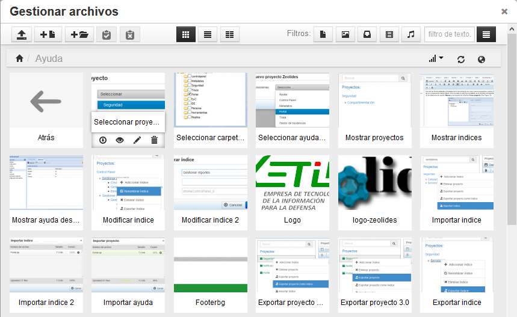

Ayuda del componente Gestor de ayudas de sistemas
Versión: 3.0
Fecha de liberación: 1/Marzo/2014
Descripción:
Gestiona la ayuda de los sistemas informáticos. Provee una estructura flexible que permite elaborar ayudas a cualquier tipo de sistema.
Contiene un panel donde se listan los proyectos de ayuda existentes. El gestor permite gestionar proyectos e índices dentro de éstos, brindando funciones como: adicionar, buscar, eliminar, exportar, importar y mostrar proyectos, así como sus índices. Además presenta una amplia gama de opciones para editar el contenido de las ayudas.
A través del nuevo gestor de ayudas se puede actualizar la versión de las ayudas creadas con el Gestor de ayudas de sistemas 2.0.
¿Cómo convertir una ayuda de la versión 2.0 a la versión 3.0?
Para actualizar la versión de una ayuda, primeramente se debe exportar ésta desde la versión 2.0, para esto se debe acceder a Inicio/Herramientas/Ayuda/Ayuda, ver Figura 1.

Figura 1: Acceder a Ayuda 2.0.
En el panel izquierdo, se presiona clic secundario sobre el proyecto que se desea exportar y se selecciona la opción Exportar proyecto ayuda en html, ver Figura 2.

Figura 2: Exportar proyecto de ayuda en la versión 2.0.
Se selecciona la casilla chequeable correspondiente a la carpeta de imágenes de la ayuda que se está exportando, ver Figura 3.

Figura 3: Seleccionar directorio de imágenes.
Una vez exportado el proyecto de ayuda 2.0, se accede a Inicio/Ayuda3/Administración, ver Figura 4.

Figura 4: Acceder a Ayuda 3.0.
Para importar la ayuda generada con la versión 2.0, se accede a Proyecto/Importar Proyecto, ver Figura 5.
 Figura 5: Acceder a Importar proyecto.
Figura 5: Acceder a Importar proyecto.
En la interfaz mostrada se selecciona la opción Adicionar archivo y se localiza la ayuda importada en la versión 2.0. A continuación se importa la ayuda, ver Figura 6.

Figura 6: Importar proyecto de ayuda.
Ahora solo resta exportar la ayuda en la versión 3.0. Para esto se presiona clic secundario sobre el proyecto antes importado, ubicado en el panel izquierdo de la interfaz Administración y se selecciona la opción Exportar proyecto, ver Figura 7 .

Figura 7: Acceder a Exportar proyecto.
¿Cómo trabajar con las opciones generales de un proyecto?
El componente Gestor de Ayudas, brinda un conjunto de funcionalidades para gestionar los proyectos de ayuda, permitiendo abrir, adicionar, buscar, eliminar, exportar, importar y mostrar proyectos.
Abrir proyecto
Esta opción permite abrir un proyecto ya creado y editar su contenido. El primer paso es acceder a Inicio/Ayuda3/Administración, ver Figura 4. Luego se accede a Proyecto/Abrir proyecto, ver Figura 8.

Figura 8: Acceder a Abrir proyecto.
Se selecciona y se abre el proyecto de ayuda que se desea abrir, ver Figura 9.
 Figura 9: Seleccionar proyecto a abrir.
Figura 9: Seleccionar proyecto a abrir.
Adicionar proyecto
Esta opción permite adicionar un nuevo proyecto. Para ello se accede a Inicio/Ayuda3/Administración, ver Figura 4. Luego se accede a Proyecto/Nuevo proyecto, ver Figura 10, y se selecciona Zeolides si se desea crear la ayuda a un componente de Zeolides, o Local si la ayuda a crear es de un sistema externo.

Figura 10: Acceder a Nuevo proyecto.
Se selecciona el componente al cual se le desea crear la ayuda, ver Figura 11.
 Figura 11: Seleccionar componente.
Figura 11: Seleccionar componente.
Buscar proyecto
Esta opción permite buscar un proyecto de ayuda existente. Para esto se debe acceder a Inicio/Ayuda3/Administración, ver Figura 4 e introducir el nombre del proyecto en la barra de búsqueda, ubicada en la parte superior del panel izquierdo, ver Figura 12.
 Figura 12: Buscar proyecto.
Figura 12: Buscar proyecto.
Eliminar proyecto
Esta opción permite eliminar un proyecto ya adicionado. Para esto se debe acceder a Inicio/Ayuda3/Administración, ver Figura 4 y presionar clic secundario sobre el proyecto que se desea eliminar, ubicado en el panel izquierdo, a continuación se selecciona la opción Eliminar proyecto, ver Figura 13.
 Figura 13: Acceder a Eliminar proyecto.
Figura 13: Acceder a Eliminar proyecto.
Exportar proyecto
Esta opción permite exportar un proyecto de ayuda. Es importante destacar que tanto un proyecto de ayuda como los acápites incluidos en su interior, son considerados índices en el sistema. De esta forma, un proyecto puede ser exportado de dos maneras. En la primera variante es exportado como proyecto y en la segunda como índice, posibilitando esta última, la opción de ser adicionado posteriormente como índice de otro proyecto.
Para llevar a cabo la primera variante se debe acceder a Inicio/Ayuda3/Administración, ver Figura 4, luego se presiona clic secundario sobre un proyecto ubicado en el panel izquierdo y se selecciona la opción Exportar proyecto, ver Figura 7.
Para llevar a cabo la segunda variante se presiona clic secundario sobre un proyecto ubicado en el panel izquierdo y se selecciona la opción Exportar proyecto como índice, ver Figura 14.
 Figura 14: Acceder a Exportar proyecto como índice.
Figura 14: Acceder a Exportar proyecto como índice.
Importar proyecto
Esta opción permite importar un proyecto gestionado y exportado con el gestor. Para esto se debe acceder a Inicio/Ayuda3/Administración, ver Figura 4, luego se accede a Proyecto/Importar proyecto, ver Figura 5, se localiza el proyecto de ayuda que se desea importar y se importa, ver Figura 6.
Mostrar proyectos
Esta opción permite mostrar los proyectos gestionados. Para esto se debe acceder a Inicio/Ayuda3/Administración, ver Figura 4 y en el panel izquierdo seleccionar el proyecto que se desea mostrar, ver Figura 15.
 Figura 15: Mostrar proyectos.
Figura 15: Mostrar proyectos.
¿Cómo editar el contenido de un índice de ayuda?
El contenido de un índice puede ser editado a través de un conjunto de opciones que brinda el Gestor de ayudas de sistemas, de las cuales la amplia mayoría coinciden con las estándares encontradas en los editores de texto profesionales. A continuación se listan las opciones:
- Nuevo documento.
- Imprimir.
- Deshacer.
- Rehacer.
- Cortar.
- Copiar.
- Pegar.
- Pegar como texto.
- Seleccionar todo.
- Buscar y reemplazar.
- Insertar enlace.
- Insertar/editar imagen.
- Insertar/editar video.
- Salto de página.
- Insertar fecha/hora.
- Espacio fijo.
- Gestionar archivos.
- Insertar plantilla.
- Caracter especial.
- Mostrar caracteres invisibles.
- Ayudas visuales.
- Previsualizar.
- Pantalla completa.
- Fuente.
- Tamaño.
- Color del texto.
- Color de fondo.
- Negrita.
- Itálica.
- Subrayado.
- Tachado.
- Viñetas.
- Numeración.
- Sangrías.
- Superíndice.
- Subíndice.
- Bloque de cita.
- Alineación.
- Limpiar formato.
- Quitar enlace.
- Insertar y modificar tabla.
- Código fuente.
Entre las opciones listadas destaca por su nivel de complejidad y por ser menos común la de gestionar archivos, que se explica a continuación:
Esta herramienta permite gestionar los archivos necesarios para elaborar una ayuda, dígase imágenes, audios, videos y ficheros(con extensión txt, log y xml). Con el gestor de archivos es posible subir y almacenar los archivos en el sistema. Brinda además, una serie de opciones (que serán descritas más adelante) para manipular estos ficheros.
Para iniciar el gestor de archivos se debe acceder a Inicio/Ayuda3/Administración, ver Figura 4, a continuación se accede a Insertar/Gestionar archivo, ver Figura 16.

Figura 16: Acceder a Gestionar archivos.
Se muestra la interfaz Gestionar archivos, ver Figura 17.

Figura 17: Gestionar archivos.
Una vez dentro del gestor de archivos es posible:
- Subir archivos: Esta opción permite subir al sistema archivos ubicados en el ordenador. Para esto se debe presionar
 y se añaden los archivos deseados, ver Figura 18.
y se añaden los archivos deseados, ver Figura 18.

Figura 18: Arrastrar ficheros.
- Adicionar archivo: Esta opción permite crear un fichero (con las extensiones: txt, log y xml) desde el propio gestor de archivos. Para esto se debe presionar
 y se introducen los datos del nuevo fichero, verFigura 19.
y se introducen los datos del nuevo fichero, verFigura 19.

Figura 19: Adicionar archivo.
- Adicionar carpeta: Esta opción permite crear una nueva carpeta para almacenar ficheros en el gestor de archivos. Para esto se debe presionar
 e introducir el nombre de la carpeta en la interfaz mostrada, ver Figura 20.
e introducir el nombre de la carpeta en la interfaz mostrada, ver Figura 20.

Figura 20 Adicionar carpeta.
- Copiar: Esta opción permite copiar un fichero existente en el gestor de archivos. Para esto se debe presionar clic secundario sobre un archivo y seleccionar la opción Copiar, ver Figura 21.
 Figura 21: Acceder a Copiar.
Figura 21: Acceder a Copiar.
- Cortar: Esta opción permite cortar un fichero existente en el gestor de archivos. Para esto se debe presionar clic secundario sobre un archivo y seleccionar la opción Cortar, ver Figura 22.
- Pegar elementos: Esta opción permite pegar en la carpeta actual un archivo copiado en el portapapeles. Para esto se debe presionar
 .
. - Limpiar portapapeles: Esta opción permite limpiar el portapeles. Para esto se debe presionar
 .
.
- Filtrar elementos: Esta opción permite filtrar los ficheros que se desean observar. Para esto se debe presionar una de las opciones de filtrado o introducir el nombre del fichero buscado en el campo de texto, ver Figura 22.

Figura 22: Filtros.
- Seleccionar vista: Esta opción permite seleccionar el tipo de vista en que se desean observar los archivos mostrados en el gestor. Para esto se debe seleccionar una de las opciones de vista, ver Figura 23.

Figura 23: Vistas.
- Descargar: Esta opción permite descargar en el ordenador un archivo existente en el gestor de archivos. Para esto se debe posicionar el cursor encima de un archivo y presionar
 .
.
- Vista previa: Esta opción permite obtener una vista previa más ampliada de un archivo existente en el gestor de archivos. Para esto se debe posicionar el cursor encima de un archivo y presionar
 .
.
- Renombrar: Esta opción permite cambiarle el nombre a un archivo existente en el gestor de archivos. Para esto se debe posicionar el cursor encima de un archivo y presionar
 , luego se introduce el nuevo nombre en la interfaz mostrada, ver Figura 24.
, luego se introduce el nuevo nombre en la interfaz mostrada, ver Figura 24.

Figura 24: Renombrar.
- Eliminar: Esta opción permite eliminar un archivo existente en el gestor de archivos. Para esto se debe posicionar el cursor encima del archivo y presionar
 .
.
- Mostrar información de archivo: Esta opción permite observar la información de un archivo existente en el gestor de archivos. Para esto se debe presionar clic secundario sobre un archivo, ver Figura 21.
- Mostrar URL: Esta opción permite observar la URL de un fichero existente en el gestor de archivos. Para esto se debe presionar clic secundario sobre un archivo y seleccionar la opción Mostrar URL, ver Figura 21.
- Insertar archivo en la ayuda: Esta opción permite insertar en la ayuda un archivo existente en el gestor de archivos. Para esto se debe dar clic sobre un fichero y el archivo se insertará en la posición actual del cursor dentro de la ayuda.
¿Cómo trabajar con las opciones generales de un índice?
El componente Gestor de Ayudas, brinda un conjunto de funcionalidades para gestionar los indices de un proyecto de ayuda, permitiendo adicionar, buscar, eliminar, exportar, importar, modificar y mostrar índices, ya sea desde la propia ayuda o desde el subsistema.
Adicionar índice
Esta opción permite adicionar un nuevo índice a un proyecto de ayuda o a un propio índice. Para esto se debe acceder a Inicio/Ayuda3/Administración, ver Figura 4, luego se presiona clic secundario sobre un proyecto o un índice de un proyecto, en el panel izquierdo y se selecciona la opción Adicionar índice, ver Figura 25.

Figura 25: Acceder a Adicionar índice.
Se introducen los datos del índice y se crea, ver Figura 26.
 Figura 26: Adicionar índice.
Figura 26: Adicionar índice.
Buscar índice
Esta opción permite buscar un índice existente. Para esto se debe acceder a Inicio/Ayuda3/Administración, ver Figura 4, e introducir el nombre del índice en la barra de búsqueda, ubicada en la parte superior del panel izquierdo, ver Figura 27.
 Figura 27: Buscar índice.
Figura 27: Buscar índice.
Eliminar índice
Esta opción permite eliminar un índice ya adicionado. Para esto se debe acceder a Inicio/Ayuda3/Administración, ver Figura 4, luego se presiona clic secundario sobre el índice que se desea eliminar, ubicado en el panel izquierdo y se selecciona la opción Eliminar índice, ver Figura 28.
 Figura 28: Acceder a Eliminar índice.
Figura 28: Acceder a Eliminar índice.
Exportar índice
Esta opción permite exportar un índice de un proyecto de ayuda. Para esto se debe acceder a Inicio/Ayuda3/Administración, ver Figura 4, luego se presiona clic secundario sobre un índice ubicado en el panel izquierdo y se selecciona la opción Exportar índice, ver Figura 29. Por último se exporta el índice.
 Figura 29: Acceder a Exportar índice.
Figura 29: Acceder a Exportar índice.
Importar índice
Esta opción permite importar un índice gestionado y exportado con el gestor. Para esto se debe acceder a Inicio/Ayuda3/Administración, ver Figura 4, luego se presiona clic secundario sobre un índice ubicado en el panel izquierdo y se selecciona la opción Importar índice, ver Figura 30.
 Figura 30: Acceder a Importar índice.
Figura 30: Acceder a Importar índice.
Se localiza el índice que se desea importar y se importa, ver Figura 31.
 Figura 31: Importar índice.
Figura 31: Importar índice.
Modificar índice
Esta opción permite modificar un índice creado o importado con anterioridad. Para esto se debe acceder a Inicio/Ayuda3/Administración, ver Figura 4, se presiona clic secundario sobre un índice y se selecciona la opción Modificar índice, ver Figura 32.
 Figura 32: Acceder a Modificar índice.
Figura 32: Acceder a Modificar índice.
Se modifican los campos deseados en el índice, ver Figura 33.

Figura 33: Modificar índice.
Mostrar índices
Esta opción permite mostrar los índices gestionados. Para esto se debe acceder a Inicio/Ayuda3/Administración, ver Figura 4 y en el panel izquierdo se selecciona el índice que se desea mostrar, ver Figura 34.

Figura 34: Mostrar índices.